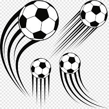

<!-- Toolbar -->
<div class="toolbar" role="banner">
  
  <span><a [routerLink]="['/']">Home</a></span>
  <span class="pipeline">|</span>
  <span><a [routerLink]="['/clube']">Clube</a></span>
  <span class="pipeline">|</span>
  <!-- Método que está no app.component.ts para direcionar para uma rota -->
  <!-- <span><a (click)="openJogador()" style="cursor: pointer;">Jogador</a></span>  -->
  <span><a [routerLink]="['/jogador']">Jogador</a></span>
  <span class="pipeline">|</span>
  <span><a [routerLink]="['/partida']">Partida</a></span>
    <div class="spacer"></div> 
</div>


<div style="margin-top: 80px;">
  <router-outlet></router-outlet>
</div>
